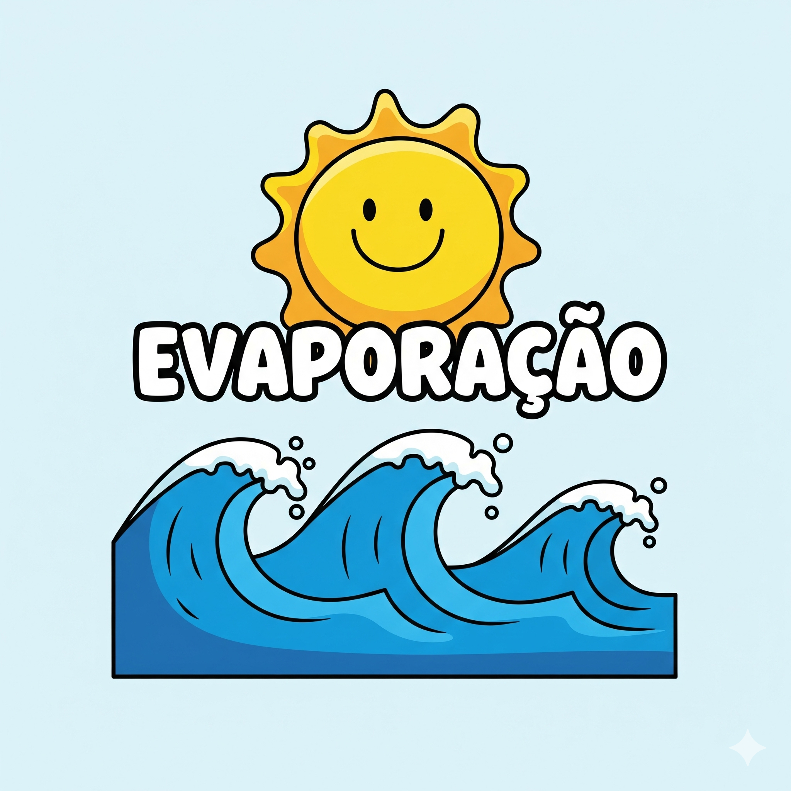
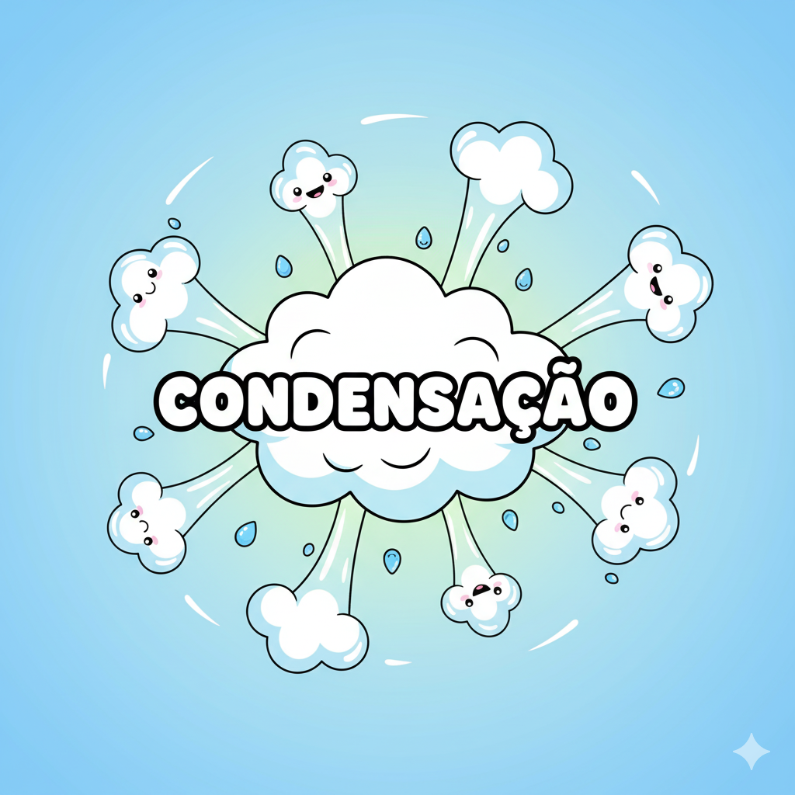
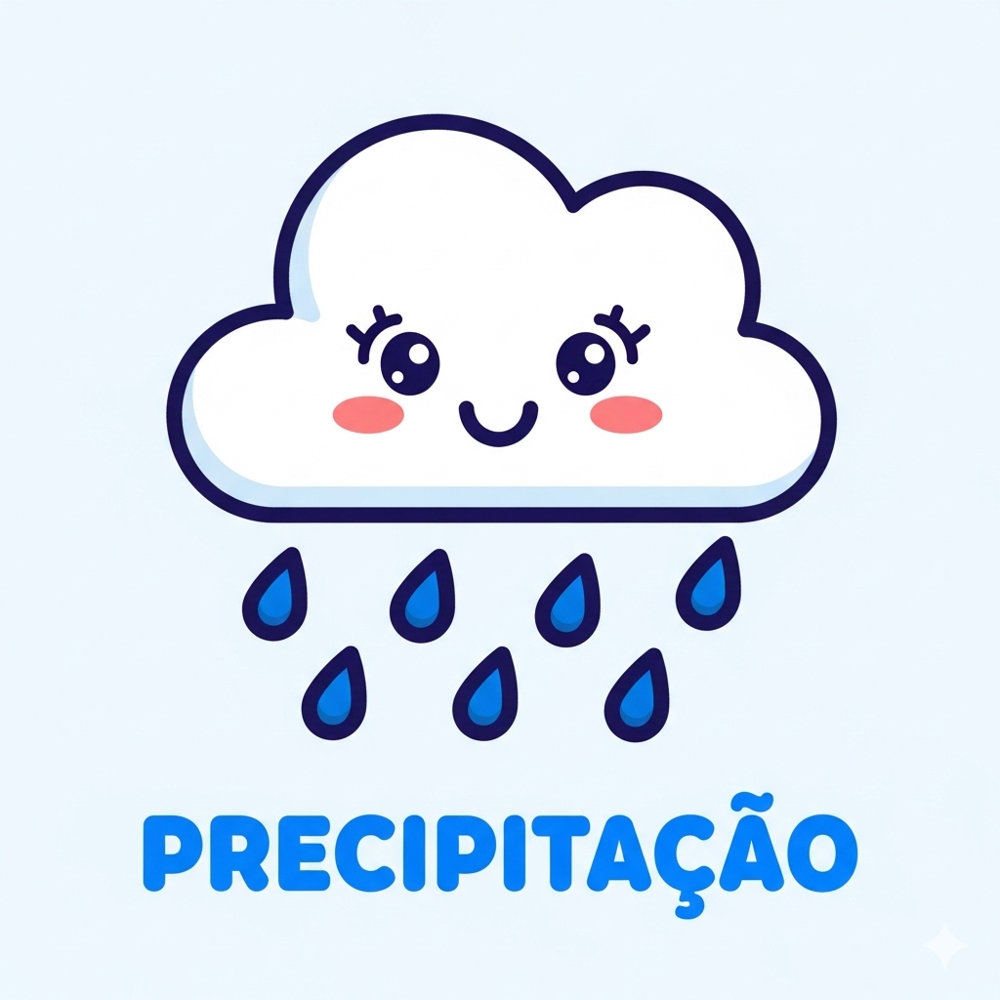
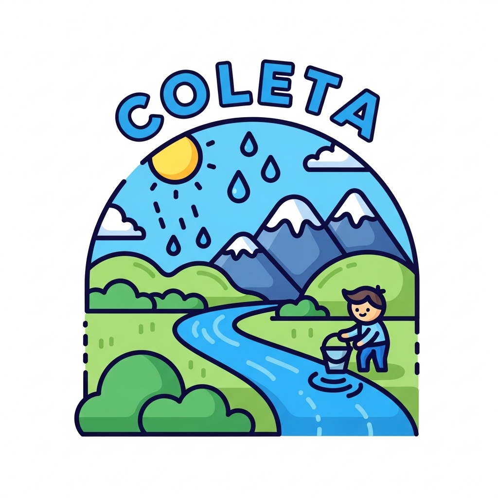

Olá, explorador(a) da natureza! Vamos aprender sobre o ciclo da água.
1. A Subida Mágica (Evaporação): Nossa viagem começa nos rios, lagos e oceanos. O Sol, que é como um grande motor, esquenta a água. Quando a água esquenta, ela fica tão leve que se transforma em vapor. Esse vapor sobe para o céu. As plantas também ajudam, liberando vapor em um processo chamado transpiração.
2. A Formação das Nuvens (Condensação): Lá no alto, o ar é mais frio. Quando o vapor de água encontra esse ar frio, ele se junta em gotinhas minúsculas, formando as nuvens. Esse processo se chama condensação. É como quando um espelho fica embaçado!
3. A Volta para a Terra (Precipitação): As nuvens são como balões de gotinhas. Quando ficam muito cheias e pesadas, a água cai de volta para a Terra em forma de chuva, neve ou granizo. Essa queda é a precipitação.
4. O Recomeço (Coleta e Infiltração): A água que cai volta para os rios, lagos e oceanos (coleta) ou entra na terra (infiltração), abastecendo os reservatórios subterrâneos. E então... o Sol esquenta a água e a viagem recomeça!
Clique no Sol para transformar a água em vapor!
Clique para juntar o vapor e formar uma nuvem!
A nuvem ficou pesada. Clique nela para chover!
Mostre o que você aprendeu com a leitura! Escolha a resposta certa.
🤔 1. De acordo com o texto, quem é o "grande motor" que esquenta a água?
🤔 2. O que é a evaporação?
🤔 3. As plantas participam da evaporação através de um processo chamado:
🤔 4. A condensação acontece quando:
🤔 5. O texto compara a condensação com qual exemplo do dia a dia?
🤔 6. Qual o nome que se dá para a queda da água das nuvens?
🤔 7. Por que a água cai das nuvens?
🤔 8. O que é a infiltração?
🤔 9. A "Coleta" é quando a água...
🤔 10. O que o texto quer dizer com "a viagem nunca para"?